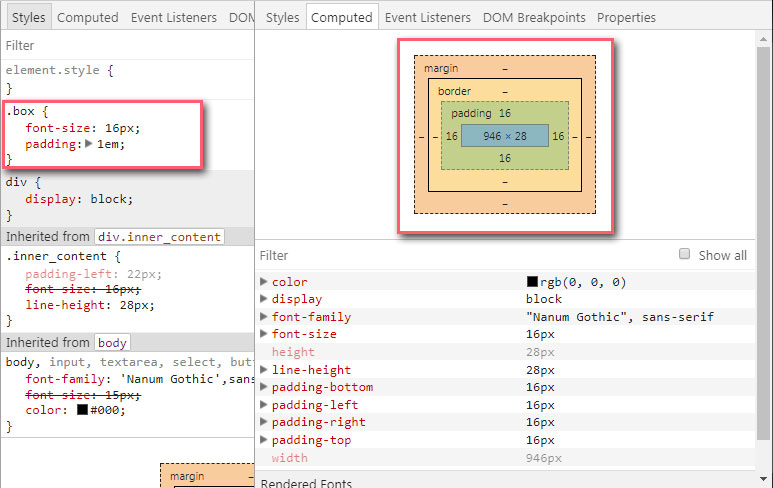
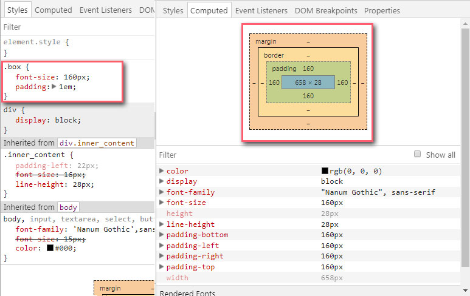

em, rem?
"em과 rem 단위를 쓰면 고정된 크기에만 머무는게 아니라, 구성요소를 늘리고 줄이는게 가능해짐으로 브라우저 크기에 따라 적합한 사이즈의 컨텐츠를 제공할 수 있음"
"em과 rem 단위를 쓰면 고정된 크기에만 머무는게 아니라, 구성요소를 늘리고 줄이는게 가능해짐으로 브라우저 크기에 따라 적합한 사이즈의 컨텐츠를 제공할 수 있음"
- HTML의 폰트 크기가 지정되지 않았다면 브라우저 설정값이 효력을 가짐 [설정 - 글꼴 맞춤설정 -기본글꼴/최소글꼴 크기 기준으로 잡음]
- 만약에 1em혹은 1rem 값을 지정했다면, 브라우저 기본 폰트사이즈에 따라 다양한 값으로 변환될 수 있다.
계산방법 : 상속된 font-size에 배수로 계산
- 예제 1

- 예제 2

폰트 크기를 상속 받았다면 상속된 값이 em으로 환산됨
- 최상위 요소 말고 기타 다른 특정 요소의 font-size를 기준으로 그 크기가 바뀌어야 하는 곳에 사용
- em은 관리하기 어려움으로 꼭 필요 할때만 사용을 권함
상속에 구애를 받지 않는 절대 단위를 지정 혹은 브라우저에 설정된 폰트 크기를 그대로 상속(root = html)
/* body기본 폰트사이즈 16px설정 */
body{font-size:1.6rem}
/* 브라우저 기본글꼴크기 16px 기준으로 10xp == 1rem이 되도록 맞춤값 */
@media (min-width:320px) and (max-width:352px){html{font-size:0.625rem}}
@media (min-width:353px) and (max-width:384px){html{font-size:0.6875rem}}
@media (min-width:385px) and (max-width:416px){html{font-size:0.75rem}}
@media (min-width:417px) and (max-width:448px){html{font-size:0.8125rem}}
@media (min-width:449px) and (max-width:480px){html{font-size:0.875rem}}
@media (min-width:481px) and (max-width:512px){html{font-size:0.9375rem}}
@media (min-width:513px) and (max-width:544px){html{font-size:1rem}}
@media (min-width:545px) and (max-width:576px){html{font-size:1.063rem}}
@media (min-width:577px) and (max-width:608px){html{font-size:1.125rem}}
@media (min-width:609px) and (max-width:639px){html{font-size:1.188rem}}
@media (min-width:640px) and (max-width:672px){html{font-size:1.25rem}}
@media (min-width:673px) and (max-width:723px){html{font-size:1.313rem}}
@media (min-width:724px) and (max-width:773px){html{font-size:1.375rem}}
@media (min-width:774px) and (max-width:823px){html{font-size:1.438rem}}
@media (min-width:824px) and (max-width:873px){html{font-size:1.5rem}}
@media (min-width:874px) and (max-width:923px){html{font-size:1.563rem}}
@media (min-width:924px) and (max-width:973px){html{font-size:1.625rem}}
@media (min-width:974px) and (max-width:1023px){html{font-size:1.688rem}}
@media (min-width:1024px){html{font-size:1.75rem}}
[단위계산 바로가기]